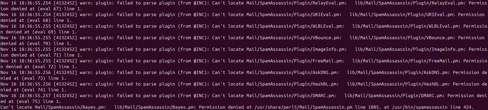

SpamAssassini käsitsi test ei jõudnud tulemuseni
Postkasti jõudnud kirja uurimisel käivitati SpamAssassini käsitsi test kasutajana amavis. Test väljastas moodulite laadimisel Permission denied ja katkes Bayes.pm laadimise juures.
- Kirja tekst loeti INBOX-ist käsuga
doveadm fetch, valides kirja Message-ID järgi. - Tekst suunati pärast
text:päise eemaldamist käsulesudo -u amavis spamassassin -t. - Väljundist otsiti X-Spam-Status päiseid. Selle asemel saadi moodulite lugemisõiguse vead.
sudo doveadm fetch -u 'POSTKAST' text mailbox INBOX HEADER Message-ID 'KIRJA-MESSAGE-ID' | sed '1{/^text:$/d;s/^text: //;}' | sudo -u amavis spamassassin -t | sed -n '/^X-Spam-Status:/,/^$/p'POSTKAST ja KIRJA-MESSAGE-ID on privaatsuse tõttu asendatud kohatäited; kordamisel tuleb kasutada uuritava kirja tegelikke väärtusi.
Seis: lahendamata. See tõendab käsitsi käivitatud testi tõrget. Sellest ei saa järeldada, et automaatne kirja vastuvõtt katkeks sama õigusteveaga. Õiguste parandust ega edukat kordustesti kasutaja ei kinnitanud.
